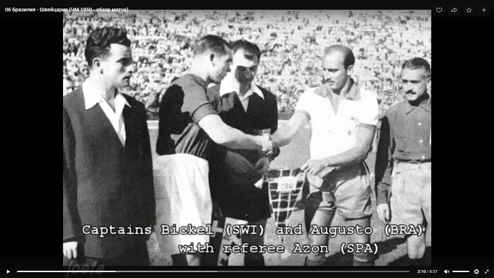

Сергей Колосков. 22-10-2020
Тема арбитров также многогранна, у них есть и свои рекорды, и свои старожилы. У них много чего и своего, специфического. О числовых показателях главных арбитров на чемпионатах мира мы обязательно вспомним, но отдельно. Сегодня же поговорим в основном о помощниках или ассистентах главных арбитров, о судейских бригадах в целом. В общем, коснёмся малоизученного раздела судейской кухни.
В официальных статистических сборниках ФИФА отмечены самые молодые и самые возрастные арбитры, обслуживавшие матчи чемпионатов мира.
Самым молодым главным арбитром является представитель Уругвая Франсиско Матеуччи. Он принял участие в 4 играх, в 3 как лайнсмен, а матч Югославия — Боливия судил в поле. Речь идёт о первом чемпионате мира.
17 июля 1930 г. на стадионе «Парк Сентрал» сошлись югославы и боливийцы. В день матча Маттеучи было 27 полных лет 2 мес и 1 день (или 27 лет и 62 дня). В составе боливийцев было три игрока, старше него на год, а один футболист был моложе него на 10 лет. Вообще в том матче была сплошная молодежь. У югославов все 11 человек были моложе 25 лет, из них двое 19-летних и четверо 20-летних. Самыми возрастными в этом матче были два лайнсмена и два тренера, причём одному тренеру было только 30, другому 32, как и одному из лайнсменов.
Уругваец Матеуччи был лайнсменом в первый и во второй игровой дни на турнире. 13 июля он ассистировал вместе с чилийцем Альберто Варнкеном главному арбитру аргентинцу Хосе Масиасу в игре США — Бельгия, в котором был забит первый хет-трик мировых чемпионатов. Аргентинцу шёл 38-й год, а чилийцу было почти 41. Для лайнсменов Маттеуччи установил минимальную возрастную отметку в 27 лет 58 дней.
На следующий день Маттеуччи вновь с флажком работал на матче Румыния — Перу. 20 июля ему вновь пришлось встретится на футбольном поле с боливийцами, теперь в соперничестве с бразильцами. А сам арбитр сменил свисток на флажок.
Через 4 года на ЧМ-34 самому молодому арбитру турнира доверили судить и финальный матч. Шведскому арбитру Ивану Эклинду в день финального матча Италия — Чехословакия «стукнуло» 28 лет 8 мес и 5 дней (248 дн).
На футбольном поле в финальном матче 9 футболистов были старше главного арбитра из Швеции, из них шестеро итальянцы. Самым возрастным игроком того финала оказался «ориунди» Луис Монти, четыре года назад игравший в финале ЧМ-30 за Аргентину. В день финала в Риме Монти было 33 года. На полгода моложе него был автор дубля в финале Раймундо Орси.
Только в 21 веке на ЧМ-2002 вновь появился главный арбитр, которому в день матча было меньше 30 лет. 10 июня 2002 г. матч второго тура группового этапа Тунис — Бельгия в поле судил австралиец Марк Шилд. В день матча ему было 28 лет 9 мес и 8 дней (281 дн). В матче принимало участие 15 игроков старше судьи по возрасту. Самыми возрастными оказались вратарь сборной Туниса 36-летний Али Бумнижель и 33-летний капитан бельгийцев Марк Вильмотс, забивший первый гол в матче.
Но как оказалось, самым молодым официальным лицом в матчах чемпионатов мира является вовсе не главный арбитр, а лайнсмен.
На чемпионате мира 1950 г. 28 июня на матч Бразилия — Швейцария лайнсменом был назначен чилийский рефери Серхио Бустаманте. Этому молодому человеку в тот день было 26 лет от роду да ещё 2 месяца и 4 дня.
Крайний слева — это Бустаманте.
Он был лайнсменом и в ещё одном матче с участием швейцарцев — со сборной Мексики, проходившем 2 июля. Но самое главное — он ведь и бразильцев судил ещё раз. Но это произошло только через 12 лет на чемпионате мира в Чили. Ему уже было солидных 38 лет.
Да и не один раз на чемпионате мира на родной земле в 1962 г. он работал с бразильцами: 6 июня он был главным арбитром матча Бразилия — Испания, а 10 июня уже в четвертьфинале Бразилия — Англия он был лайнсменом.
Бустаманте после ЧМ-62 стал пятым арбитром, который работал на матчах чемпионатов мира через 12 и более лет.
Четверо арбитров судили и на довоенных турнирах 30-х годов прошлого века, и на первом послевоенном чемпионате 1950 г., из них один чистый лайнсмен француз Шарль Де Ля Саль (Деласаль), работавший в 1938 и 1950 гг. На трёх турнирах с 1934 по 1950 гг. судили швед Иван Эклинд и австриец Алоиз Беранек, в 1938 г. вследствие аншлюса Австрии выступавший под флагом Третьего рейха.
Итальянец Дженерозо Даттило — единственный арбитр, у которого промежуток между двумя турнирами составил 16 лет. На ЧМ-34 он был лайнсменом в одной игре, а в 1950 г. судил ставший знаменитым матч США — Англия и в трёх встречах работал на бровке.
Чилийский арбитр Серхио Бустаманте и россиянин Валентин Иванов являются единственными арбитрами, у которых перерыв в 12 лет между двумя турнирами произошёл в мирное время. В.Иванов в 1994 г. отработал помощником арбитра в 3 матчах, а через 12 лет вновь попал в когорту избранных арбитров, но теперь уже в качестве главного, и вновь судил в 3 матчах на ЧМ-2002.
Разговор пойдёт о более многочисленной части судейского корпуса — о помощниках главных арбитров. Конечно, я имею в виду только двух боковых арбитров — так их называли раньше, для краткости будем называть их лайнсменами. Кстати, именно этим термином — лайнсменами — этих арбитров называли официально в отчётах ФИФА, например, и на ЧМ-66 в Англии, и на турнире через 20 лет в Мексике. Да я вам больше скажу — и в 1994 г., когда арбитров разделили по амплуа, их продолжали называть лайнсменами. Нынешним арбитрам и слово «лайнсмен» не нравится, и слово «боковые» не по нраву, говорят, что только ветер такой бывает. Да, ветер порой гуляет в разных местах…
Именно трое человек составляют судейскую бригаду, которая и работает на поле во время матча. Но в последнее время появилось много новаций. Давайте и о них вспомним.
На чемпионате мира в России впервые в состав судейской бригады вошли ещё 8 человек VAR. Четверо из 8 — это арбитры, ещё четверо — технический персонал, операторы. Подробнее о бригаде VAR будет сказано в следующем разделе.
В официальном протоколе матча таким образом теперь 9 фамилий судейского корпуса. К основной бригаде из главного арбитра и двух его помощников в поле с 1994 г. добавился резервный арбитр, правильное наименование должности которого на матче есть «4-е официальное лицо». Он и выходит перед матчем вместе с остальными тремя арбитрами на поле для приветствия и процедуры «первого удара», и одет в точно такую же форму, как и основная троица. Хотя резервный арбитр на матче был, наверное, всегда. По крайней мере в официальном отчёте ФИФА по ЧМ-82 есть скан с перечнем всех матчей турнира и арбитрами, в том числе резервным, а также инспектором и комиссаром матча. С 2006 г. в протоколе значится и ещё одно официальное лицо — резервный лайнсмен. Но на поле вместе с бригадой, в форме, перед матчем он не появляется. Кстати, правильно это официальное лицо в матче так и называется «резервный помощник арбитра». Правда, на сайте ФИФА в разделе «Факты матча» с 2006 по 2014 гг. их именовали «5-е официальное лицо». Итого 5 арбитров «полевых» (назовём их так для простоты, хотя, как видим не все появляются на поле) и 4 человека из VAR. Есть и ещё два официальных лица — комиссар матча и генеральный координатор.
Думаю, когда-нибудь, статистики начнут учитывать и арбитров VAR. Но не сейчас. Сейчас будем говорить о лайнсменах в поле. Основной упор сделаем на устоявшиеся бригады арбитров. Но не сразу всё это появилось.
На первом чемпионате мира для обслуживания 18 игр привлекались 11 главных арбитров из 7 стран. Вернее, главных арбитров было только 10, плюс требовались ещё лайнсмены — так двоих человек рекрутировали из тренерского корпуса участвовавших в турнире команд. Главный тренер сборной Боливии Улисес Сауседо стал по совместительству и главным арбитром (в одном матче), и лайнсменом (аж в 5 играх, в том числе и в финале!). Один из тренеров сборной Румынии Константин Рэдулеску в двух матчах отработал лайнсменом.
Никаких сформировавшихся бригад из главного и лайнсменов не было. Так как Боливия сыграла только 2 игры и благополучно вылетела, то их тренер был так востребован в качестве лайнсмена, ему же через океан домой не возвращаться. На первом же чемпионате мира у него рекордное для нынешнего времени количество отработанных матчей, да и на том турнире только он и бельгиец Джон Лангенус работали на 6 играх. Это первый случай, когда у арбитра число отработанных матчей больше, чем максимальное число сыгранных матчей на турнире одной из команд-призёров. Второй и последний пока раз такое зафиксировано на ЧМ-90.
А бригада на турнире 1930 г. всё-таки была — в двух матчах главным арбитром был бельгиец Дж.Лангенус, с флажками на бровке ему помогали бельгиец же Анри Кристоф и неутомимый Сауседо. Первый раз они обслуживали матч Аргентина — Чили, а вторым их совместным матчем оказался финал Уругвай — Аргентина.
Боливиец Улисес Сауседо вообще-то стал первым, чья фамилия фигурирует в протоколах аж 8 матчей на одном турнире, но в трёх ипостасях (тренер, главный арбитр и лайнсмен). Ни игроку, ни тренеру не удастся перекрыть этот показатель, так как максимальное число матчей на турнире пока равно 7. Правда, возможен вариант играющего тренера, но такого ещё точно не было. Рекорд у лайнсменов по играм на одном чемпионате принадлежит поляку Михалу Листкевичу — в 1990 г. он отработал на 8 матчах. Сразу оговоримся, что совсем не учитывались резервные арбитры и резервные лайнсмены на матчах.
В 2018 г. на турнире в России отмечали довольно редкое событие для судей — одна и та же бригада обслуживала и матч открытия, и финальный матч. Причём во второй раз такие матчи довелось обслуживать аргентинской бригаде. В 2006 г. эта честь выпала бригаде Орасио Элизондо, а матчи в «Лужниках» судила бригада Нестора Питаны. В 1950 г. англичанин Джордж Ридер судил и матч открытия Бразилия — Мексика, и решающий матч финальной группы Уругвай — Бразилия. Один лайнсмен был с ним на обоих этих играх, это шотландец Джордж Митчелл.
А в 1930 г. был «первопроходец» этого дела — уже упоминавшийся бельгиец А.Кристоф вдвоём с бразильцем Жилберту ди Алмейда Регу помогали на бровке главному арбитру уругвайцу Доминго Ломбарди в матче открытия Франция — Мексика. Про финальный матч уже упоминали.
Поразительно — на первом чемпионате мира можно отыскать любое статистическое событие, чего бы ни коснуться. Ну да, послематчевых пенальти не было, да и нужды тоже не было в них — ни одной ничьей на турнире.
На ЧМ-30 впервые обслуживала матч пара чистых лайнсменов — Альберто Алонсо (Уругвай) и К.Рэдулеску ассистировали всё тому же боливийцу Сауседо в матче Аргентина — Мексика. Алонсо и Рэдулеску главными арбитрами на турнире не назначались. Всего на турнире было ещё 2 чистых лайнсмена — уругваец Мартин Афестеги и мексиканец Гаспар Вальехо.
На матче США — Парагвай 17 июля 1930 г. впервые оба лайнсмена были представителями одной страны: М.Афестеги и Анибал Техада были уругвайцами, а главным в поле был аргентинец Хосе Масиас. Полностью трио арбитров из одной страны на первом чемпионате мира не было.
На следующих турнирах экспериментировали, привлекали много лайнсменов, особенно от страны-хозяйки турнира. В 1934 г. для проведения 17 матчей использовали 14 чистых лайнсменов, из них 9 были итальянцами. А матч Венгрия — Египет впервые на чемпионатах мира обслуживала бригада арбитров из одной страны — конечно, из Италии во главе с рефери в поле Риналдо Барлассина.
В 1938 и 1950 гг. на турнирах чистых лайнсменов поубавилось до 12 человек, далее их количество уменьшалось чуть ли ни вдвое.
Политика судейского комитета ФИФА долгое время была простая. Никому из арбитров не отдавать предпочтения, все проводили сравнительно равное количество игр. Самое большое — это 4 матча на турнире у одного главного арбитра. Никаких устоявшихся дуэтов лайнсменов не наблюдалось. Максимум по 2 игры в чемпионате проводила одна пара лайнсменов, когда с одним арбитром (реже), в основном с разными. Ротация продолжалась очень долго, да весь 20 век и даже чуть больше.
Увеличение команд до 24 с чемпионата мира 1982 г. никак не повлияло — просто пропорционально увеличили количество судей. Можно отметить, что на турнире 1986 г. совсем не было чистых лайнсменов, все арбитры работали и в поле, и на бровке. Поэтому и судья из страны-хозяйки чемпионата, Мексики, был всего один. На всех чемпионатах мира с 1930 по 1990 гг. включительно (до разделения судей по амплуа) всегда были чистые лайнсмены, турнир 1986 г. выделяется в этом плане.
Долгое время ни один арбитр на одном турнире не работал более, чем в 6 матчах, в обоих амплуа. В 1990 г. был этакий переходный период, были и чистые лайнсмены, и главные арбитры по-прежнему назначались ассистентами. Поэтому-то чистый лайнсмен Листкевич провел 8 игр, а швейцарец Курт Ротлисбергер был и главным (в 3 матчах), и лайнсменом (в 4 играх). Колумбиец Армандо Перес провёл с флажком в руках 6 матчей. Но долговременных дуэтов лайнсменов не было. Тот же поляк Листкевич свои 8 матчей отработал с 6 разными напарниками, с двумя из них провёл по два матча.
Только в 1994 г., когда впервые на турнирах Кубка мира разделили арбитров по разным амплуа, появились пары лайнсменов, которые отработали в 3 матчах на чемпионате. Первой по датам оказалась пара австралийских лайнсменов Гордон Данстер и Эужене Браззале, работали они с тремя разными главными арбитрами. Их результат на день позже повторила пара южноамериканских лайнсменов — аргентинца Эрнесто Таиби и парагвайца Венансио Сарате, также взаимодействовавшие с тремя разными рефери.
Турнир 1998 г. уже с 32 командами ничем в интересующую нас сейчас тему не внёс никаких изменений. Только одна пара лайнсменов также отработала на 3 матчах. Речь об испанце Фернандо Тресако Грасии и кувейтце Хуссейне Гаданфари — вот такая интербригада, и вновь с тремя разными главными арбитрами.
На чемпионате мира 2002 г. и таких пар лайнсменов не нашлось, максимум по 2 матча на дуэт. Главные арбитры, как и прежде менялись. И только в 2006 г. произошёл коренной поворот.
На турнир уже прибыли готовые бригады из трёх человек. Теперь на матчи назначались только главные арбитры, а ассистенты у каждого были свои. Только в редких случаях бригада арбитров состояла не из граждан одной страны. Например, у арбитра из Сингапура Шамсула Майдина в бригаде были таиландец Прачья Пермпраич и Эйса Гулум из Арабских Эмиратов. Бригады комплектовались представителями одной конфедерации.
Количество главных арбитров сократилось с 36 в 2002 г. до 21 в 2006 г., нагрузка на судей увеличилась. Две бригады отсудили по 5 матчей, 5 бригад работали на 4 матчах.
На турнирах 2010 и 2014 гг. произвели небольшую корректировку, увеличили число бригад сначала до 24, потом до 25. Только бригаде Равшана Ирматова (Узбекистан) довелось в 2010 г. отсудить в 5 матчах, в 2014 г. 4 бригады работали максимум на 4 играх.
В 2018 г. число бригад увеличили до 28, но одной бригаде предоставили право работать на 5 матчах — это трио аргентинских арбитров во главе с Нестором Питаной. Между прочим, эта бригада провела самое большое количество матчей на мундиалях. Ведь они в одном составе трудились и в 2014 году в 4 матчах. Кроме Питаны в бригаде состояли Эрнан Майдана и Хуан Пабло Белатти. Кстати, Майдана судил на трёх турнирах, впервые в 2010 г., на его счету всего 13 матчей лайнсменом.
И хотя узбек Р.Ирматов провёл 11 игр — больше всех из главных — но состав его бригады на каждом из трёх чемпионатов обновлялся на одного человека.
А среди лайнсменов рекордсменом по играм является канадец Эктор Вергара, работавший с 2002 по 2010 гг. в 14 матчах.
На турнире в России один лайнсмен побывал в двух бригадах — и такое возможно, дело-то живое. Сальвадорец Хуан Франсиско Сумба сначала отработал на матче Швеция — Южная Корея в бригаде своего соотечественника Хоэля Агилара. А затем помог другому арбитру своей конфедерации американцу Джэйру Марруфо в игре Бельгия — Тунис.
Никто из арбитров любого амплуа не работал на 4 турнирах Кубка мира, максимум на трёх. Не всегда, правда, турниры были через каждые 4 года. Бельгиец Джон Лангенус стал первым главным арбитром, судившим на трёх чемпионатах мира подряд с 1930 по 1938 годы.
С чемпионата мира 2006 г. изменилась методология назначения резервных арбитров и их помощников. С тех пор каждый чемпионат мира становится этакой «опытной делянкой» для подготовки арбитров к следующему чемпионату мира. Да-да, именно к следующему, а кому повезёт, то и к последующим.
На всех прошедших турнирах с 2006 г. для работы на чемпионате вызывались не только арбитры, которые отработали в основной бригаде из трёх человек в поле, но и «резерв главного командования» — от 5 до 8 главных арбитров и от 7 до 10 лайнсменов. Конечно, чаще всего на подобную «стажировку» вызываются арбитры из не самых футбольных стран. Арбитры из этого резерва в поле не судили, они назначались только резервными арбитрами или резервными помощниками арбитра. Как мы помним, резервный арбитр — четвёртое официальное лицо — на поле в красивой форме всё-таки появляется перед началом матча и всю игру присматривает за техническими зонами команд, руководит процедурой замен, подсказывает, наконец, главному арбитру какие-то нюансы. Тянет это на нюанс или нет, но, например, Зинедина Зидана в финальном матче ЧМ-2006 аргентинский арбитр Орасио Элизонде удалил с подсказки резервного арбитра испанца Луиса Медины Кантальехо.
«Резервисты» активно назначаются на матчи, в общей сумме они работают как правило на половине игр чемпионата. В 2014 г. даже больше, в 39 матчах из 64, но в 2018 г. были задействованы в 31 игре. У них тоже есть свои рекордсмены — кто-то на одном чемпионате «отметился» в 9 матчах (норвежец Свейн Оддвар Моэн со своим лайнсменом Кимом Хаглундом в 2014 г.), есть и с 8, и с 7 играми. А арбитр из Таити Норберт Хуаута на двух последних турнирах был только «резервистом» и имеет в активе уже 10 игр. Но он такой один. Кто-то из «резервистов» обязательно судит на следующем турнире в поле.
Из 5 «резервистов» ЧМ-2006 двое судили в поле в 2010 г. Также двое «резервистов» ЧМ-2010 работали «в поле» в 2014 г., причём сальвадорец Хоэль Агилар и в 2018 году. Между прочим, Агилар со своими двумя помощниками работал резервным в 2010 г, в поле с ними же судил в 2014 г, а с одним из помощников и в 2018 г. — редкое постоянство бригады.
И среди лайнсменов есть «долгожители»: японец Тору Сагара судил в поле и работал в качестве резервного на двух турнирах в 2010 и 2014 гг., а в 2018 г. уже с другим «бригадиром» вновь был «резервистом». Передавать опыт молодым тоже надо.
Отметим, что в 2006 и 2010 гг. у резервного главного арбитра из «глубокого резерва» было по 2 помощника, не всегда из одной страны. Часть матчей резервным помощником был один, потом помощник менялся. В 2014 и 2018 гг. резервных помощников стало только по одному. Некоторые пары «резервистов» получаются интернациональные и межконтинентальные. Так японский лайнсмен Хироши Ямаучи в 2018 г. в 3 из 4 матчах был резервным помощником в паре с резервным арбитром из Коста-Рики Рикардо Монтеро.
Иранский арбитр Алиреза Фагани в 2010 г. отработал в 7 матчах «резервистом», а в 2014 г. судил в 4 матчах, в том числе и игру за 3-е место. Так что кто-то из 8 «резервистов» ЧМ-2018 г., если не растеряет приобретённый опыт, а лучше приумножит его, то будет судить в поле на матчах в Катаре в 2022 году.
На чемпионате мира 2018 г. в России впервые применялась система видеопомощи арбитра, пресловутый VAR.
В состав бригады VAR входят 8 человек — 4 арбитра и 4 оператора. Про операторов ничего не скажем, имена их остались неизвестны. Имена всех 4 арбитров VAR известны на каждом матче и внесены в официальный протокол игры.
Всё действо бригады VAR происходило в Москве, с судьями на поле устанавливалась связь онлайн, в каком бы городе ни проходил матч.
Перед турниром ФИФА определила 13 арбитров из 3 конфедераций (УЕФА, Европа, КОНМЕБОЛ, Южная Америка и АФК, Азия). В состав этих 13 человек вошли арбитры, которые на поле судить не собирались. В эту команду видеоарбитров по правилам могут входить как действующие судьи, так и закончившие активную практику.
В самой бригаде VAR каждый судья отвечает за конкретную сферу деятельности и имеет в протоколе особое обозначение. Сам видеоарбитр (Video Assistant Referee, видеоассистент арбитра, обозначается VAR) является главным в этой команде. У него три ассистента. Один из них является помощником по офсайдам (Offside Video Assistant Referee, кратко обозначается AVAR 2). На роль этого помощника назначаются как правило лайнсмены. Сами арбитры не любят слова «лайнсмен», но оно короткое и ёмкое, чтобы не городить такое: «на роль помощника видеоарбитра назначаются помощники арбитра». Два других ассистента кратко обозначаются AVAR 1 и AVAR 3. На сайте ФИФА AVAR 1 именуется Assistant Video Assistant Referee, т.е. ассистент видеоарбитра. Должность AVAR 3 именуется Support Video Assistant Referee, выходит поддержка или та же помощь видеоарбитра. На роль AVAR, AVAR 1 и AVAR 3 в основном назначаются арбитры из группы 13 человек, о которой говорилось выше, эти арбитры по амплуа являются (являлись) главными арбитрами в поле.
На практике ситуация была немного скорректирована. В роли видеоарбитра на ЧМ-2018 побывало действительно 13 человек. Но из них только 9 из списка 13, ещё четверо арбитров попробовали себя в качестве видеоарбитра между судейством игр чемпионата. Такая честь выпала бразильцу Сандру Риччи (1 матч), поляку Шимону Марчиняку (1 матч), французу Клеману Тюрпену (3 игры) и американцу Марку Гейгеру (5 игр). Таким образом, американец Гейгер в качестве VAR провёл больше игр, чем главным в поле, впрочем, как и француз Тюрпен.
В состав команды видеарбитров из 13 человек входили три итальянских арбитра. Все трое назначались на роль VAR, в общей сложности троица из Италии отработала видеоарбитрами в 23 матчах из 64, причём в 3 играх 1/8 финала, в 3 играх четвертьфиналов, в одном полуфинале и в финальном матче. Итальянец Массимилиано Иррати на матче Бразилия — Сербия своё 39-летие отметил на посту в качестве видеоарбитра. В этой роли он провёл наибольшее количество игр на турнире — целых 14 матчей с 14 июня (матч открытия) до 15 июля 2018 года (финальный матч). Самый большой перерыв между матчами у него случился на финише — 4 дня «без работы» между полуфиналом Франция — Бельгия и финалом Франция — Хорватия. На роль AVAR 1 Иррати не назначался ни разу, а вот в качестве AVAR 3 он работал ещё на 3 матчах. Итого М.Иррати фигурирует в протоколах 17 матчей.
Соотечественники Иррати арбитр Даниэле Орсато видеоарбитром назначался на 7 матчах, а Паоло Валери на двух. Также в итальянскую «диаспору» VAR входил действующий ассистент арбитра Эленито Ди Либераторе, проведший 4 матча в роли ассистента по офсайдам AVAR 2. А также главный арбитр Джанлука Рокки, задействованный в качестве AVAR 3 в 3 играх. В целом в роли AVAR 3 итальянцы побывали на 25 матчах, из них П.Валери в 11, а Д.Орсато в 8 встречах. Упомянем и действующего ассистента арбитра Мауро Тонолини, входившего в бригаду Рокки, которая провела на турнире 3 матча в поле.
Чилийский помощник арбитра Карлос Астроса Карденас, или просто Карлос Астроса, судил на ЧМ-2014 в Бразилии в двух матчах в бригаде соотечественника Энрике Оссеса. А вот на турнире в России Астроса не покидал Москву, так как был активно привлечён к работе в «военной комнате» VAR. В качестве ассистента видеоарбитра по офсайдам он отработал аж на 18 матчах, в 8 из них в паре с итальянцем Иррати. И работал чилиец также с матча открытия до финала, дважды отрезками по 4 дня подряд, максимальные интервалы «без работы» дважды составили по 3 дня на финише турнира.
Чтобы понять нагрузку чилийца Астроса — вторым по частоте использования в качестве AVAR 2 стал немец Марк Борш с 8 матчами. Он со своей немецкой бригадой во главе с Феликсом Брыхом один раз слетал в Калининград, чтоб отсудить матч Сербия — Швейцария.
Отметим также голландца Дэнни Маккели, он также отметился в протоколах 18 игр: в роли VAR в 11 матчах, в роли AVAR 3 в 7 встречах.
Арбитр из Польши Павел Гиль, вошедший в команду из 13 видеоарбитров, всегда назначался только на роль AVAR 1 — в 16 матчах. Чуть поотстал от него немец Бастиан Данкерт — в роли AVAR 1 он провёл 14 матчей, но он однажды был видеоарбитром и на 2 матчах был AVAR 3.
Нашлись и «многостаночники» — как среди арбитров, так и среди их помощников. Француз Клеман Тюрпен поработал во всех 5 номинациях для главных арбитров: дважды он судил со своей бригадой в поле; трижды его назначали видеоарбитром VAR вместе со своим лайнсменом Сирилем Грингором в качестве AVAR 2; один матч он работал в роли AVAR 1, а в двух играх был AVAR 3; ну, и один матч только вместе уже со вторым своим помощником Николя Дано побывал в роли резервного арбитра.
Для лайнсменов пока только три номинации. Пятеро помощников главных арбитров и судили матчи чемпионата, и побывали в роли AVAR 2, и потрудились в качестве резервных помощников главных арбитров.
Из 62 лайнсменов в поле с флажком поработали 55 человек. А семеро не остались без дела — кто «прописался» в «военной комнате» VAR, а кто-то отправлялся в один из российских городов и там проводил несколько матчей в качестве «резервиста». Переездов было мало. Так, чилицы Хулио Баскуньян и Кристиан Шиманн все свои 5 матчей «резервистами» работали в Казани. Но кому-то из главных арбитров пришлось и поездить — вместе со своей бригадой иранец Алиреза Фагани, итальянец Джанлука Рокки, мексиканец Сесар Артуро Рамос, голландец Бьорн Куйперс и серб Милорад Мажич побывали «по работе» каждый в 4 разных городах России.
Вполне понятна нагрузка на судей в бригаде VAR. Туда по протекции или по разнарядке от конфедераций не попадёшь. В «резервистах» насчёт этого полная свобода действий — хоть с островов Тихого океана, хоть из любых саванн можно назначать судей, пусть учатся. Учиться-то ведь есть у кого!
Без участия сборной Италии по футболу чемпионат мира в России состоялся, тут спортивный принцип объективен и не обсуждается. А вот с участием итальянских арбитров в любой роли прошли 34 матча из 64. Без итальянцев и «наVAR» бы был не тот!